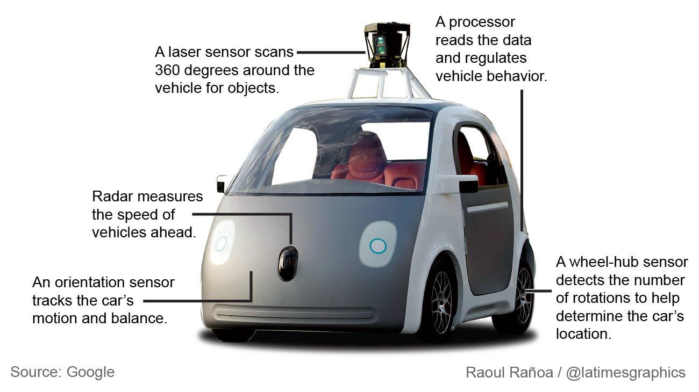
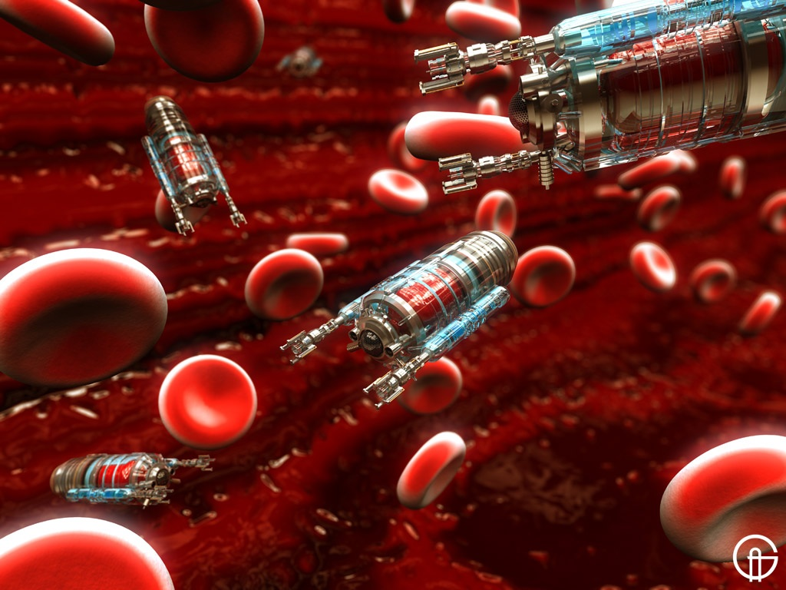
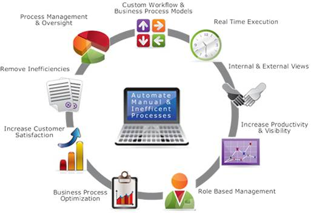

Autonomous systems are the future. Humans have dreamed of autonomous systems since the emergence of the computer and now the idea of an autonomous world is just on the horizon. With the emergence of autonomous systems will come many benefits. The benefits that we will cover are lack of human error, medical advances, and business process automation.
Lack of Human Error
One of the biggest issues associated with the use of technology today is human error. According to the Insurance Institute for Highway Safety, nearly a third of all crashes could be prevented if all vehicles had forward collision and lane-departure warning systems, side-view (blind spot) assistance and adaptive headlights. In addition, motor vehicles accidents are the leading cause of death for children aged 2-14
Autonomous VehiclesAs of March 2013, Google had logged more than 500,000 miles of autonomous driving on public roads with its driverless car without incurring a crash except. There is one recorded crash for that Google car that happened when a person behind the wheel was manually driving the Google Car.
It is estimated that in 2012 there were 30,800 fatal car crashes associated with human error,according to the latest report from the National Highway Transportation Safety Administration (NHTSA). By eliminating the possibility of human error, autonomous vehicles like the Google car may save over 30,000 lives per year. In addition, the CDC estimates that fatal crashes in 2005 lead to over $41 billion in medical and work loss costs. Please see the Department of Transportation's Benefit-Cost Analysis on more information related to the cost incurred in car crash injuries.
Another major component of eliminating error through the use of autonomous vehicles is that the vehicles can react much faster and more efficiently than a human can. For example, existing technology allows for the use of autonomous parallel parking, road drift assistance, and stopping instantly when an object is close while backing up. Autonomous vehicles also eliminate factors such as drunk driving, lack of sleep, disabilities, fatigue, illness, road rage, speeding, driver behaviour, and other related impairments.
Video: A World of Cars that Drive Themselves
Medical Advances
Imagine a world where robots swim through your veins unclogging arteries, destroying viruses and cancer cells, and creating a healthier you all from inside your body. It sounds like something straight out of a magic school bus episode; however, nano robotics is an emerging medical technology field that is showing remarkable results. Although the field is still in the research and development phase, a useful application of nanotechnology to destroy cancer cells is already in use today!
Nano BotsNano Bots get their name from the fact that they are robots that are the scale of a nano-meter (10-9 meters). As mentioned above, some applications of Nano Bots are already in use today. Examples of uses today include: coatings to make stain resistance clothes, nanopowders to create high performance sunscreen, and targeted tissue drug delivery. Fields that are already adopting nano technology include: medical diagnosis and treatments, biotechnology, advanced development of pharmaceuticals, cosmetics, aerospace and automotive industries, security, defence, environmental protection, electronics, computers and communication, energy production, storage, lighting, manufacturing, and product design.
Nano Bots in medicine can be used for several purposed including, appetite control, cancer treatment, the removal of cholesterol, the development of new drugs, bone replacement, chemical substitutes, and more. The nano bot designs are inspired by the E. Coli virus in which it has a rotary motor for movement using magnetism in place of the flagella. The bots can be used to form covalent bonds with existing molecules in the human body to create or block molecules on the atom level. Currently the nanobots are used used via a joystick in very controlled test environments; however, the future of nanotechnology in medicine may allow the nano bots to self-replicate completely autonomously throughout the body to perform maintenance tasks such as cleaning arterial plaque or delivering vitamins and minerals. To stay up to date on the latest in nano technolgy please visit nanobot.info
Video: What is Nano Technology
Business Process Automation
A phrase that is gaining increasing popularity in the business world is Business Process Automation. Business Process Automation is a type of software or systematized method that streamlines difficult or redundant tasks into a hassle free and automated process. The goal of business process automation is to save time and money that would be spent on repetitive or tedious tasks allowing for increased productivity.
One great example of software that allows for Business Process Automation is SAP. Integrating SAP allows businesses to gain visibility and control of business processes while streamlining the processes by integrating with SAP applications. Another great example of a business process automation is Amazon's checkout process. When an order is placed on Amazon shipping is automatically calculated based on a specified algorithm and specific aspects of the buyer, seller, and product (such as location, distance, amazon prime eligibility, etc). Once the product is ordered it follows a multi-stage process where the order is sent to a specific warehouse and awaiting shipment. Business Process Automation is possible in many different areas of business such as: document management, automatic updates, optimizing website management, dynamic marketing, and much more.
